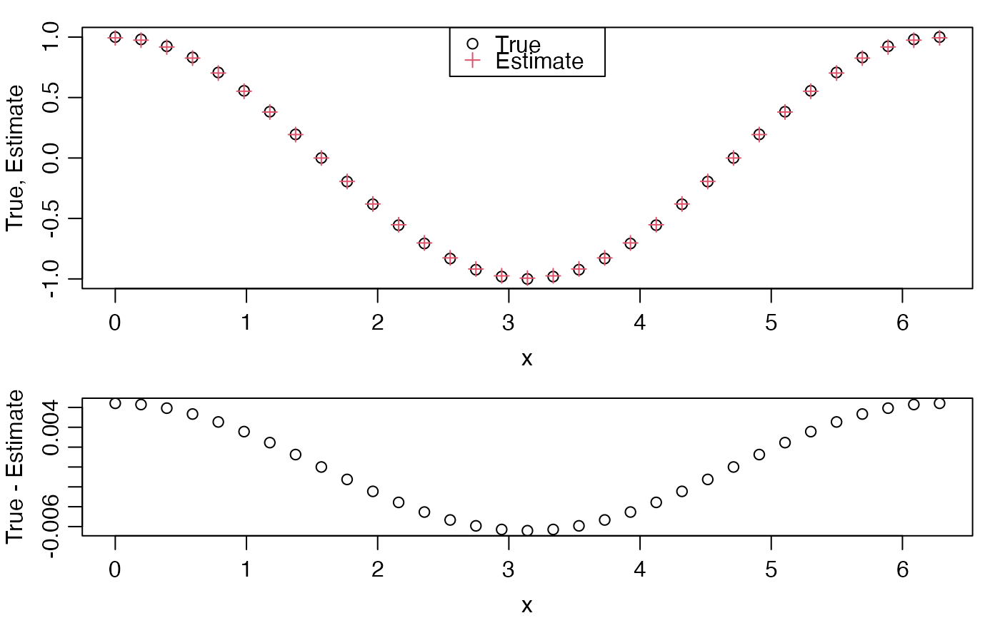

derivative.RdIf the lengths of x and y exceed 2, then derivative() computes centred
derivatives for interior points, and first differences at the endpoints.
If the lengths equal 2, then derivative() computes the first difference
and repeats the value. Otherwise, an error is reported.
derivative(x, y)a numerical vector holding the independent coordinate. An error is
reported if x holds under 3 points.
a numerical vector of the same length as x, holding the dependent
coordinate, y=y(x).
derivative dy/dx
# Demonstrate with a known derivative
x <- seq(0, 2*pi, pi/16)
y <- sin(x)
dydx <- derivative(x, y)
layout(rbind(1,2), heights=c(0.6, 0.4))
par(mar=c(3,3,1,1), mgp=c(2,0.7,0))
plot(x, cos(x), ylab="True, Estimate")
points(x, dydx, col=2, pch=3)
legend("top", pch=c(1, 3), col=c(1, 2), legend=c("True", "Estimate"))
plot(x, cos(x) - dydx, ylab="True - Estimate")
